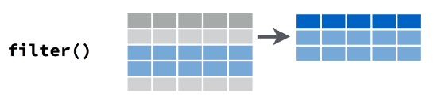
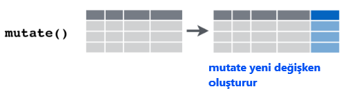
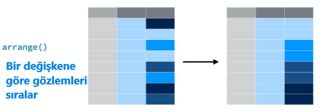

2.4 {dplyr} Paketi ile Verilerin Manipülasyonu
Verilerin işlenmesi, özetlenmesi, birleştirilmesi, yeni veriler oluşturulması ve benzeri işlemler için çeşitli fonksiyonlar içerir.
Temel
{dplyr}fonksiyonları şunlardır:filter(): belirli mantıksal ölçütlere uygun alt kümelerin oluşturulmasıselect(): sütunların (değişkenlerin) seçimimutate(): yeni değişken oluşturmasummarize(): verilerin özetlenmesiarrange(): verilerin sıralanması
Tüm işlemler, satır seçimi, sütun seçimi, yeni değişken oluşturma, özetleme, sıralama, veri içindeki grup değişken(ler)ine göre yapılabilir. Bunun için
group_by()fonksiyonu kullanılır.
2.4.1 filter(): gözlemlerin filtrelenmesi
dplyr::filter()fonksiyonu ile satırlara göre alt kümeler oluşturabiliriz.Belirttiğimiz kriterlere uygun gözlemlerden oluşan yeni veri çerçeveleri veya tablolar oluşturabiliriz.

- Örnek
gapminderülke veri setinde Türkiye’nin gözlemlerini almak istediğimizi düşünelim. Veri setini incelediğimizde Türkiye’nin 1573 ile 1584 satırları arasında yer aldığını görüyoruz. Bu bilgiden hareketle Türkiye veri setini aşağıdaki gibi oluşturabiliriz:
## # A tibble: 12 × 6
## country continent year lifeExp pop gdpPercap
## <fct> <fct> <int> <dbl> <int> <dbl>
## 1 Turkey Europe 1952 43.6 22235677 1969.
## 2 Turkey Europe 1957 48.1 25670939 2219.
## 3 Turkey Europe 1962 52.1 29788695 2323.
## 4 Turkey Europe 1967 54.3 33411317 2826.
## 5 Turkey Europe 1972 57.0 37492953 3451.
## 6 Turkey Europe 1977 59.5 42404033 4269.
## 7 Turkey Europe 1982 61.0 47328791 4241.
## 8 Turkey Europe 1987 63.1 52881328 5089.
## 9 Turkey Europe 1992 66.1 58179144 5678.
## 10 Turkey Europe 1997 68.8 63047647 6601.
## 11 Turkey Europe 2002 70.8 67308928 6508.
## 12 Turkey Europe 2007 71.8 71158647 8458.Satır numaralarını kullanarak verileri çekmek hata olasılığını arttırdığı için tercih edilmemelidir.
Bunun yerine
dplyr::filter()fonksiyonunu kullanabiliriz. Bu fonksiyonun girdisi verilerin satırlarına uygulanan mantıksal ifadelerdir. Örneğin:
## # A tibble: 12 × 6
## country continent year lifeExp pop gdpPercap
## <fct> <fct> <int> <dbl> <int> <dbl>
## 1 Turkey Europe 1952 43.6 22235677 1969.
## 2 Turkey Europe 1957 48.1 25670939 2219.
## 3 Turkey Europe 1962 52.1 29788695 2323.
## 4 Turkey Europe 1967 54.3 33411317 2826.
## 5 Turkey Europe 1972 57.0 37492953 3451.
## 6 Turkey Europe 1977 59.5 42404033 4269.
## 7 Turkey Europe 1982 61.0 47328791 4241.
## 8 Turkey Europe 1987 63.1 52881328 5089.
## 9 Turkey Europe 1992 66.1 58179144 5678.
## 10 Turkey Europe 1997 68.8 63047647 6601.
## 11 Turkey Europe 2002 70.8 67308928 6508.
## 12 Turkey Europe 2007 71.8 71158647 8458.Bu fonksiyonun kullanımı baz
R’dakisubset()fonksiyonuna benzemektedir.filter()fonksiyonu çoklu ifadelerin kullanılmasına izin verir. Örneğin, Türkiye’nin 2000 sonrası verileri için aşağıdaki komutu kullanabiliriz:
## # A tibble: 2 × 6
## country continent year lifeExp pop gdpPercap
## <fct> <fct> <int> <dbl> <int> <dbl>
## 1 Turkey Europe 2002 70.8 67308928 6508.
## 2 Turkey Europe 2007 71.8 71158647 8458.- Örnek: Türkiye ve Brezilya’nın 2000 sonrası gözlemlerini içeren bir tablo oluştur:
## # A tibble: 4 × 6
## country continent year lifeExp pop gdpPercap
## <fct> <fct> <int> <dbl> <int> <dbl>
## 1 Brazil Americas 2002 71.0 179914212 8131.
## 2 Brazil Americas 2007 72.4 190010647 9066.
## 3 Turkey Europe 2002 70.8 67308928 6508.
## 4 Turkey Europe 2007 71.8 71158647 8458.2.4.2 select(): değişkenlerin seçimi
select() fonksiyonuSütunlardan (değişkenlerden) hareketle yeni bir tablo (tibble) oluşturmak istersek
dplyr::select()fonksiyonunu kullanabiliriz.*Örnek
mtcarsveri setindempg,cyl,hpdeğişkenlerinden oluşan bir tablo oluştur
## # A tibble: 32 × 11
## mpg cyl disp hp drat wt qsec vs am gear carb
## <dbl> <int> <dbl> <int> <dbl> <dbl> <dbl> <int> <int> <int> <int>
## 1 21 6 160 110 3.9 2.62 16.5 0 1 4 4
## 2 21 6 160 110 3.9 2.88 17.0 0 1 4 4
## 3 22.8 4 108 93 3.85 2.32 18.6 1 1 4 1
## 4 21.4 6 258 110 3.08 3.22 19.4 1 0 3 1
## 5 18.7 8 360 175 3.15 3.44 17.0 0 0 3 2
## 6 18.1 6 225 105 2.76 3.46 20.2 1 0 3 1
## 7 14.3 8 360 245 3.21 3.57 15.8 0 0 3 4
## 8 24.4 4 147. 62 3.69 3.19 20 1 0 4 2
## 9 22.8 4 141. 95 3.92 3.15 22.9 1 0 4 2
## 10 19.2 6 168. 123 3.92 3.44 18.3 1 0 4 4
## # ℹ 22 more rows# dplyr::select() can clash with MASS::select()
library(dplyr)
mtcars2 <- dplyr::select(mtcars, mpg, cyl, hp)
mtcars2## # A tibble: 32 × 3
## mpg cyl hp
## <dbl> <int> <int>
## 1 21 6 110
## 2 21 6 110
## 3 22.8 4 93
## 4 21.4 6 110
## 5 18.7 8 175
## 6 18.1 6 105
## 7 14.3 8 245
## 8 24.4 4 62
## 9 22.8 4 95
## 10 19.2 6 123
## # ℹ 22 more rowsfilter()komutu ile birlikte kullanılabilir.Örnek:
gapminderveri setinde Türkiye için sadece yıl, yaşam beklentisi ve kişi başına GDP değişkenlerinden oluşan bir veri çerçevesi oluştur:
## # A tibble: 12 × 3
## year lifeExp gdpPercap
## <int> <dbl> <dbl>
## 1 1952 43.6 1969.
## 2 1957 48.1 2219.
## 3 1962 52.1 2323.
## 4 1967 54.3 2826.
## 5 1972 57.0 3451.
## 6 1977 59.5 4269.
## 7 1982 61.0 4241.
## 8 1987 63.1 5089.
## 9 1992 66.1 5678.
## 10 1997 68.8 6601.
## 11 2002 70.8 6508.
## 12 2007 71.8 8458.(pipe) işlemcisi %>% (magrittr paketi) veya |> (R native) : bu işlemciyi kullanarak
f(g(x))gibi bir işlemix %>% g() %>% f()şeklinde yazabiliriz. Böylece yazdığımız programlar daha basit ve anlaşılır olabilir.Önceki örnekte
gapminderveri seti öncefilter()fonksiyonuna gönderilerek Türkiye seçildi. Sonraki%>%işlemi ileselect()fonksiyonuna gönderildi ve sütunlar seçildi. Aynı kodu şöyle de yazabilirdik:
## # A tibble: 12 × 3
## year lifeExp gdpPercap
## <int> <dbl> <dbl>
## 1 1952 43.6 1969.
## 2 1957 48.1 2219.
## 3 1962 52.1 2323.
## 4 1967 54.3 2826.
## 5 1972 57.0 3451.
## 6 1977 59.5 4269.
## 7 1982 61.0 4241.
## 8 1987 63.1 5089.
## 9 1992 66.1 5678.
## 10 1997 68.8 6601.
## 11 2002 70.8 6508.
## 12 2007 71.8 8458.- Örnek: Türkiye ve Brezilya için 2000 sonrasında kişi başına GDP değişkenini içeren bir tablo oluştur:
gapminder |> filter(country %in% c("Turkey","Brazil"), year>2000) |>
select(year, country, gdpPercap)## # A tibble: 4 × 3
## year country gdpPercap
## <int> <fct> <dbl>
## 1 2002 Brazil 8131.
## 2 2007 Brazil 9066.
## 3 2002 Turkey 6508.
## 4 2007 Turkey 8458.Alıştırma: Önceki örnekteki tabloyu sadece baz R fonksiyonlarını kullanarak oluşturunuz.
Çözüm:
R’da bir görevi yerine getirmenin birden çok yolu olabilir. Bir çözüm:
gapminder[gapminder$country %in% c("Turkey", "Brazil") & gapminder$year>2000, c("year", "gdpPercap")]## # A tibble: 4 × 2
## year gdpPercap
## <int> <dbl>
## 1 2002 8131.
## 2 2007 9066.
## 3 2002 6508.
## 4 2007 8458.- Eğer bir sütunu alıp atomik bir vektör oluşturmak istersek
pull()fonksiyonunu kullanabiliriz. Örneğin,gapminderveri setindeki ülkelerin isimlerini içeren bir karakter vektörü uluşturalım:
## [1] Afghanistan Albania Algeria Angola Argentina Australia
## 142 Levels: Afghanistan Albania Algeria Angola Argentina Australia Austria ... Zimbabwe- Sütun seçimine yardımcı olabilecek fonksiyonlar:
contains(): bir ifadeyi içeren sütunları seçerends_with(): belirli bir ifade ile biten sütunları seçerstarts_with(): belirli bir ifadeyle başlayan sütunları seçermatches(): bir ifadeyle eşleşen sütunları seçer
2.4.3 mutate(): yeni değişken oluşturma

dplyr::mutate()fonksiyonu ile veri setine yeni değişkenler (sütunlar) ekleyebiliriz.mutate()içinde kullanılan fonksiyonlar vektörleştirilmiş olmalıdır; yani hem girdi hem de çıktı vektör olmalıdır.Örnek: Kişi başına GDP’nin doğal logaritmasının ayrı bir değişen olarak veri setine eklenmesi:
## # A tibble: 5 × 7
## country continent year lifeExp pop gdpPercap lgdppc
## <fct> <fct> <int> <dbl> <int> <dbl> <dbl>
## 1 Afghanistan Asia 1952 28.8 8425333 779. 6.66
## 2 Afghanistan Asia 1957 30.3 9240934 821. 6.71
## 3 Afghanistan Asia 1962 32.0 10267083 853. 6.75
## 4 Afghanistan Asia 1967 34.0 11537966 836. 6.73
## 5 Afghanistan Asia 1972 36.1 13079460 740. 6.61- Örnek: Veri setinde kişi başına GDP değerleri var ancak toplam GDP yok. Nüfus bilgisini kullanarak toplam ülke GDP değerlerini oluşturunuz.
## # A tibble: 5 × 5
## year country gdpPercap pop gdp
## <int> <fct> <dbl> <int> <dbl>
## 1 1952 Afghanistan 779. 8425333 6567086330.
## 2 1957 Afghanistan 821. 9240934 7585448670.
## 3 1962 Afghanistan 853. 10267083 8758855797.
## 4 1967 Afghanistan 836. 11537966 9648014150.
## 5 1972 Afghanistan 740. 13079460 9678553274.mutate()ile ilişkili diğer fonksiyonlar:transmute(): yeni değişkenler oluşturur ve mevcut değişkenleri siler.mutate_all(): bir fonksiyonu tüm sütunlara uygularmutate_if(): sadece kritere uyan sütunlara bir fonksiyonu uygularmutate_at(): bir fonksiyonu belirtilmiş sütunlara uygular
- Örnekler
## # A tibble: 5 × 3
## x y z
## <int> <int> <chr>
## 1 1 20 a
## 2 2 19 b
## 3 3 18 c
## 4 4 17 d
## 5 5 16 e## # A tibble: 5 × 1
## w
## <int>
## 1 20
## 2 38
## 3 54
## 4 68
## 5 80# nümerik sütunların doğal logaritmasını ve 10 tabanına göre
# logaritmasını al
# çoklu dönüştürmeler list() içinde belirtilmeli
df |> mutate_if(is.numeric, list(ln = log, log10 = log10))## # A tibble: 5 × 7
## x y z x_ln y_ln x_log10 y_log10
## <int> <int> <chr> <dbl> <dbl> <dbl> <dbl>
## 1 1 20 a 0 3.00 0 1.30
## 2 2 19 b 0.693 2.94 0.301 1.28
## 3 3 18 c 1.10 2.89 0.477 1.26
## 4 4 17 d 1.39 2.83 0.602 1.23
## 5 5 16 e 1.61 2.77 0.699 1.20## # A tibble: 5 × 3
## x y z
## <int> <int> <fct>
## 1 1 20 a
## 2 2 19 b
## 3 3 18 c
## 4 4 17 d
## 5 5 16 e# sadece x ve y'nin karelerini ayrı sütun olarak ekle
df |> mutate_at(c("x", "y"), list(sq = function(x) x^2))## # A tibble: 5 × 5
## x y z x_sq y_sq
## <int> <int> <chr> <dbl> <dbl>
## 1 1 20 a 1 400
## 2 2 19 b 4 361
## 3 3 18 c 9 324
## 4 4 17 d 16 289
## 5 5 16 e 25 256mutate()içinde kullanılan fonksiyonları vektörize olması gerekir. Yani bir vektör girdisine karşılık bir vektör çıktısı hesaplanır. Bu fonksiyonlardan bazıları şunlardır:dplyr::lag(): bir vektörün gecikmesini alır.stats::lag()ile karıştırılmamalıdır.dplyr::lead(): bir vektörün öncü değerlerini oluşturur.- kümülatif aritmetik işlemler:
cumall(),cumany(),cummax(),cummean(),cummin(),cumprod(),cumsum() - sıralamalar:
min_rank(),percent_rank(),row_number(),cume_dist() - matematiksel işlemler:
+,-,*,/,^,%%,log,log10, … - mantıksal işlemler:
==,<,<=,>,>=,!=,between(),near() if_else(): koşullu işlemleri eleman bazında uygularcase_when(): çoklu if-elsena_if(): NA değerleri yerine belirli değerleri yaz
2.4.4 arrange(): verilerin sıralanması

Veri setinin satırlarının (gözlemlerin) sıralanmasında
dplyr::arrange()fonksiyonu kullanılabilir.Örnek:
gapminderveri setini yıla göre sırala.
## # A tibble: 1,704 × 6
## country continent year lifeExp pop gdpPercap
## <fct> <fct> <int> <dbl> <int> <dbl>
## 1 Afghanistan Asia 1952 28.8 8425333 779.
## 2 Albania Europe 1952 55.2 1282697 1601.
## 3 Algeria Africa 1952 43.1 9279525 2449.
## 4 Angola Africa 1952 30.0 4232095 3521.
## 5 Argentina Americas 1952 62.5 17876956 5911.
## 6 Australia Oceania 1952 69.1 8691212 10040.
## 7 Austria Europe 1952 66.8 6927772 6137.
## 8 Bahrain Asia 1952 50.9 120447 9867.
## 9 Bangladesh Asia 1952 37.5 46886859 684.
## 10 Belgium Europe 1952 68 8730405 8343.
## # ℹ 1,694 more rowsDefault olarak küçükten büyüğe sıraladı. Büyükten küçüğe sıralamak istersek:
## # A tibble: 1,704 × 6
## country continent year lifeExp pop gdpPercap
## <fct> <fct> <int> <dbl> <int> <dbl>
## 1 Afghanistan Asia 2007 43.8 31889923 975.
## 2 Albania Europe 2007 76.4 3600523 5937.
## 3 Algeria Africa 2007 72.3 33333216 6223.
## 4 Angola Africa 2007 42.7 12420476 4797.
## 5 Argentina Americas 2007 75.3 40301927 12779.
## 6 Australia Oceania 2007 81.2 20434176 34435.
## 7 Austria Europe 2007 79.8 8199783 36126.
## 8 Bahrain Asia 2007 75.6 708573 29796.
## 9 Bangladesh Asia 2007 64.1 150448339 1391.
## 10 Belgium Europe 2007 79.4 10392226 33693.
## # ℹ 1,694 more rows- Örnek: Yılı artan, ülkeleri alfabetik olacak şekilde satırları yeniden düzenle:
## # A tibble: 1,704 × 6
## country continent year lifeExp pop gdpPercap
## <fct> <fct> <int> <dbl> <int> <dbl>
## 1 Afghanistan Asia 1952 28.8 8425333 779.
## 2 Albania Europe 1952 55.2 1282697 1601.
## 3 Algeria Africa 1952 43.1 9279525 2449.
## 4 Angola Africa 1952 30.0 4232095 3521.
## 5 Argentina Americas 1952 62.5 17876956 5911.
## 6 Australia Oceania 1952 69.1 8691212 10040.
## 7 Austria Europe 1952 66.8 6927772 6137.
## 8 Bahrain Asia 1952 50.9 120447 9867.
## 9 Bangladesh Asia 1952 37.5 46886859 684.
## 10 Belgium Europe 1952 68 8730405 8343.
## # ℹ 1,694 more rows- Örnek: Ülkeler alfabetik, yıl artan:
## # A tibble: 1,704 × 6
## country continent year lifeExp pop gdpPercap
## <fct> <fct> <int> <dbl> <int> <dbl>
## 1 Afghanistan Asia 1952 28.8 8425333 779.
## 2 Afghanistan Asia 1957 30.3 9240934 821.
## 3 Afghanistan Asia 1962 32.0 10267083 853.
## 4 Afghanistan Asia 1967 34.0 11537966 836.
## 5 Afghanistan Asia 1972 36.1 13079460 740.
## 6 Afghanistan Asia 1977 38.4 14880372 786.
## 7 Afghanistan Asia 1982 39.9 12881816 978.
## 8 Afghanistan Asia 1987 40.8 13867957 852.
## 9 Afghanistan Asia 1992 41.7 16317921 649.
## 10 Afghanistan Asia 1997 41.8 22227415 635.
## # ℹ 1,694 more rowsfilter()vearrange()birlikte kullanılabilir. Örneğin:
## # A tibble: 25 × 6
## country continent year lifeExp pop gdpPercap
## <fct> <fct> <int> <dbl> <int> <dbl>
## 1 Haiti Americas 2007 60.9 8502814 1202.
## 2 Bolivia Americas 2007 65.6 9119152 3822.
## 3 Trinidad and Tobago Americas 2007 69.8 1056608 18009.
## 4 Honduras Americas 2007 70.2 7483763 3548.
## 5 Guatemala Americas 2007 70.3 12572928 5186.
## 6 Peru Americas 2007 71.4 28674757 7409.
## 7 Paraguay Americas 2007 71.8 6667147 4173.
## 8 El Salvador Americas 2007 71.9 6939688 5728.
## 9 Dominican Republic Americas 2007 72.2 9319622 6025.
## 10 Brazil Americas 2007 72.4 190010647 9066.
## # ℹ 15 more rows- Örnek: 2007 yılında Avrupa kıtasındaki ülkelerde yaşam beklentisini büyükten küçüğe sıralayınız.
## # A tibble: 30 × 6
## country continent year lifeExp pop gdpPercap
## <fct> <fct> <int> <dbl> <int> <dbl>
## 1 Iceland Europe 2007 81.8 301931 36181.
## 2 Switzerland Europe 2007 81.7 7554661 37506.
## 3 Spain Europe 2007 80.9 40448191 28821.
## 4 Sweden Europe 2007 80.9 9031088 33860.
## 5 France Europe 2007 80.7 61083916 30470.
## 6 Italy Europe 2007 80.5 58147733 28570.
## 7 Norway Europe 2007 80.2 4627926 49357.
## 8 Austria Europe 2007 79.8 8199783 36126.
## 9 Netherlands Europe 2007 79.8 16570613 36798.
## 10 Greece Europe 2007 79.5 10706290 27538.
## # ℹ 20 more rows2.4.5 group_by(): verilerin gruplanması
Verilerin gruplandırılması amacıyla kullanılır.
Verilerin görünümünü değiştirmez.
summarize()gibi diğer fonksiyonlarla birlikte kullanılabilir.
## # A tibble: 1,704 × 6
## # Groups: continent, year [60]
## country continent year lifeExp pop gdpPercap
## <fct> <fct> <int> <dbl> <int> <dbl>
## 1 Afghanistan Asia 1952 28.8 8425333 779.
## 2 Afghanistan Asia 1957 30.3 9240934 821.
## 3 Afghanistan Asia 1962 32.0 10267083 853.
## 4 Afghanistan Asia 1967 34.0 11537966 836.
## 5 Afghanistan Asia 1972 36.1 13079460 740.
## 6 Afghanistan Asia 1977 38.4 14880372 786.
## 7 Afghanistan Asia 1982 39.9 12881816 978.
## 8 Afghanistan Asia 1987 40.8 13867957 852.
## 9 Afghanistan Asia 1992 41.7 16317921 649.
## 10 Afghanistan Asia 1997 41.8 22227415 635.
## # ℹ 1,694 more rows## # A tibble: 1,704 × 6
## # Groups: continent, year [60]
## country continent year lifeExp pop gdpPercap
## <fct> <fct> <int> <dbl> <int> <dbl>
## 1 Afghanistan Asia 1952 28.8 8425333 779.
## 2 Albania Europe 1952 55.2 1282697 1601.
## 3 Algeria Africa 1952 43.1 9279525 2449.
## 4 Angola Africa 1952 30.0 4232095 3521.
## 5 Argentina Americas 1952 62.5 17876956 5911.
## 6 Australia Oceania 1952 69.1 8691212 10040.
## 7 Austria Europe 1952 66.8 6927772 6137.
## 8 Bahrain Asia 1952 50.9 120447 9867.
## 9 Bangladesh Asia 1952 37.5 46886859 684.
## 10 Belgium Europe 1952 68 8730405 8343.
## # ℹ 1,694 more rowsungroup()ile gruplar çözülebilir.
2.4.6 summarize(): verilerin özetlenmesi

Verilerin özet istatistiklerinin oluşturulmasında
dplyr::summarize()kullanılabilir.Bu komut öncesinde
group_by()ile veriler gruplandırılarak grup istatistikleri oluşturulabilir.
- Örnek: 2007 yılında her bir kıtada kaç ülke var?
## # A tibble: 5 × 2
## continent n
## <fct> <int>
## 1 Africa 52
## 2 Americas 25
## 3 Asia 33
## 4 Europe 30
## 5 Oceania 2- Örnek: 2007 yılında kıtalara göre ortalama yaşam beklentisini ve ortalama kişi başına GDP değerini bulunuz.
gapminder |>
filter(year==2007) |>
group_by(continent) |>
summarize(mean_life_exp = mean(lifeExp),
mean_income = mean(gdpPercap))## # A tibble: 5 × 3
## continent mean_life_exp mean_income
## <fct> <dbl> <dbl>
## 1 Africa 54.8 3089.
## 2 Americas 73.6 11003.
## 3 Asia 70.7 12473.
## 4 Europe 77.6 25054.
## 5 Oceania 80.7 29810.- Kullanışlı diğer fonksiyonlar:
summarize_at(): belirli değişkenlerin özet istatistiklerini hesaplarsummarize_all(): tüm değişkenlerin özet istatistiklerini hesaplar.summarize_if(): sadece bir tip değişkenlerin değerlerini hesaplar.
- Örnek:
summarize_at()kullanımı:
gapminder |>
filter(year==2007) |>
group_by(continent) |>
summarize_at(vars(lifeExp, gdpPercap), mean) ## # A tibble: 5 × 3
## continent lifeExp gdpPercap
## <fct> <dbl> <dbl>
## 1 Africa 54.8 3089.
## 2 Americas 73.6 11003.
## 3 Asia 70.7 12473.
## 4 Europe 77.6 25054.
## 5 Oceania 80.7 29810.- Örnek:
gapminder |>
filter(year==2007) |>
group_by(continent) |>
summarize_at(vars(lifeExp, gdpPercap), list(min = min, max = max))## # A tibble: 5 × 5
## continent lifeExp_min gdpPercap_min lifeExp_max gdpPercap_max
## <fct> <dbl> <dbl> <dbl> <dbl>
## 1 Africa 39.6 278. 76.4 13206.
## 2 Americas 60.9 1202. 80.7 42952.
## 3 Asia 43.8 944 82.6 47307.
## 4 Europe 71.8 5937. 81.8 49357.
## 5 Oceania 80.2 25185. 81.2 34435.Örnek: Önceki işlemi 1952 ve 2007 yılları için yapalım ve ortalamaları karşılaştıralım:
gapminder |>
filter(year %in% c(1952, 2007)) |>
group_by(continent, year) |>
summarize_at(vars(lifeExp, gdpPercap), mean)## # A tibble: 10 × 4
## # Groups: continent [5]
## continent year lifeExp gdpPercap
## <fct> <int> <dbl> <dbl>
## 1 Africa 1952 39.1 1253.
## 2 Africa 2007 54.8 3089.
## 3 Americas 1952 53.3 4079.
## 4 Americas 2007 73.6 11003.
## 5 Asia 1952 46.3 5195.
## 6 Asia 2007 70.7 12473.
## 7 Europe 1952 64.4 5661.
## 8 Europe 2007 77.6 25054.
## 9 Oceania 1952 69.3 10298.
## 10 Oceania 2007 80.7 29810.Gruplamanın iki değişken üzerinden group_by(continent, year) yapıldığına dikkat ediniz.
summarise()ile kullanılabiliecek fonksiyonlar aşağıda listelenmiştir. Bu fonksiyonların girdiden hareketle sadece bir özet istatistik verdiğine dikkat ediniz:n(): satır (gözlem) sayısın_distinct(): farklı gözlem sayısısum(): toplamsum(!is.na()): NA olmayan gözlem sayısıfirst(): ilk değerlast(): son değernth(): n.nci sıradaki değermean(): örneklem ortalaması,
median(): medyan,var(): örneklem varyansı,sd(): örneklem standart sapması,mad(): medyan mutlak hata (median absolute deviation),IQR(): kartiller aralığı (interquartile range),min(): minimum,max(): maksimumquantile(): n.nci dilim
- Örnek: Avrupa’da her yıl için minimum ve maksimum yaşam beklentisini bulunuz.
gapminder |>
filter(continent=="Europe") |>
group_by(year) |>
summarize(minlexp = min(lifeExp),
maxlexp = max(lifeExp) )## # A tibble: 12 × 3
## year minlexp maxlexp
## <int> <dbl> <dbl>
## 1 1952 43.6 72.7
## 2 1957 48.1 73.5
## 3 1962 52.1 73.7
## 4 1967 54.3 74.2
## 5 1972 57.0 74.7
## 6 1977 59.5 76.1
## 7 1982 61.0 77.0
## 8 1987 63.1 77.4
## 9 1992 66.1 78.8
## 10 1997 68.8 79.4
## 11 2002 70.8 80.6
## 12 2007 71.8 81.8mutate()vegroup_by()fonksiyonlarının birlikte kullanılabilir:Örnek: Her ülke için kişi başına GDP değişkeninin başlangıç yılındaki değerine oranını gösteren yeni bir değişken oluşturunuz. Yeni değişken başlangıç yılı olan 1952’de 1 değerini almalı, diğer yıllar için başlangıç yılına göre (1+büyüme oranı) olmalı.
gapminder |>
group_by(country) |>
select(country, year, gdpPercap) |>
mutate(gdppc_to_first = gdpPercap/first(gdpPercap))## # A tibble: 1,704 × 4
## # Groups: country [142]
## country year gdpPercap gdppc_to_first
## <fct> <int> <dbl> <dbl>
## 1 Afghanistan 1952 779. 1
## 2 Afghanistan 1957 821. 1.05
## 3 Afghanistan 1962 853. 1.09
## 4 Afghanistan 1967 836. 1.07
## 5 Afghanistan 1972 740. 0.949
## 6 Afghanistan 1977 786. 1.01
## 7 Afghanistan 1982 978. 1.25
## 8 Afghanistan 1987 852. 1.09
## 9 Afghanistan 1992 649. 0.833
## 10 Afghanistan 1997 635. 0.815
## # ℹ 1,694 more rows- Örnek: Yıldan yıla büyüme oranlarını yüzde olarak gösteren yeni bir değişken oluşturunuz.
gapminder |>
group_by(country) |>
select(country, year, gdpPercap) |>
mutate(gdppc_growth = 100*(gdpPercap-lag(gdpPercap))/lag(gdpPercap))## # A tibble: 1,704 × 4
## # Groups: country [142]
## country year gdpPercap gdppc_growth
## <fct> <int> <dbl> <dbl>
## 1 Afghanistan 1952 779. NA
## 2 Afghanistan 1957 821. 5.31
## 3 Afghanistan 1962 853. 3.93
## 4 Afghanistan 1967 836. -1.98
## 5 Afghanistan 1972 740. -11.5
## 6 Afghanistan 1977 786. 6.23
## 7 Afghanistan 1982 978. 24.4
## 8 Afghanistan 1987 852. -12.8
## 9 Afghanistan 1992 649. -23.8
## 10 Afghanistan 1997 635. -2.16
## # ℹ 1,694 more rowsÖrnekte kullanılan lag() fonksiyonu bir önceki dönemdeki (yılda) değere eşit olan birinci gecikmedir. Gecikmeyi açıkça veri setine ekleyelim:
gapminder |>
group_by(country) |>
select(country, year, gdpPercap) |>
mutate(lag_gdppc = lag(gdpPercap, 1, order_by = year),
gdppc_growth = 100*(gdpPercap-lag_gdppc)/lag_gdppc)## # A tibble: 1,704 × 5
## # Groups: country [142]
## country year gdpPercap lag_gdppc gdppc_growth
## <fct> <int> <dbl> <dbl> <dbl>
## 1 Afghanistan 1952 779. NA NA
## 2 Afghanistan 1957 821. 779. 5.31
## 3 Afghanistan 1962 853. 821. 3.93
## 4 Afghanistan 1967 836. 853. -1.98
## 5 Afghanistan 1972 740. 836. -11.5
## 6 Afghanistan 1977 786. 740. 6.23
## 7 Afghanistan 1982 978. 786. 24.4
## 8 Afghanistan 1987 852. 978. -12.8
## 9 Afghanistan 1992 649. 852. -23.8
## 10 Afghanistan 1997 635. 649. -2.16
## # ℹ 1,694 more rows- Yukarıda pipe operatörünü kullandık. Bunu kullanmadan aynı kodu çalıştırmak istersek:
mutate(select(group_by(gapminder,country), country, year, gdpPercap), gdppc_growth = 100*(gdpPercap-lag(gdpPercap))/lag(gdpPercap))## # A tibble: 1,704 × 4
## # Groups: country [142]
## country year gdpPercap gdppc_growth
## <fct> <int> <dbl> <dbl>
## 1 Afghanistan 1952 779. NA
## 2 Afghanistan 1957 821. 5.31
## 3 Afghanistan 1962 853. 3.93
## 4 Afghanistan 1967 836. -1.98
## 5 Afghanistan 1972 740. -11.5
## 6 Afghanistan 1977 786. 6.23
## 7 Afghanistan 1982 978. 24.4
## 8 Afghanistan 1987 852. -12.8
## 9 Afghanistan 1992 649. -23.8
## 10 Afghanistan 1997 635. -2.16
## # ℹ 1,694 more rowsBunu okumanın daha zor olduğu açıktır.
- Örnek: Avrupa’da en düşük ve en yüksek yaşam beklentisini ülke bilgisiyle birlikte oluşturunuz. Önce,
europeisimli yeni bir tibble yaratalım:
europe <- gapminder |>
filter(continent=="Europe") |>
select(year, country, lifeExp)
europe |> head(10)## # A tibble: 10 × 3
## year country lifeExp
## <int> <fct> <dbl>
## 1 1952 Albania 55.2
## 2 1957 Albania 59.3
## 3 1962 Albania 64.8
## 4 1967 Albania 66.2
## 5 1972 Albania 67.7
## 6 1977 Albania 68.9
## 7 1982 Albania 70.4
## 8 1987 Albania 72
## 9 1992 Albania 71.6
## 10 1997 Albania 73.0Daha sonra min_rank() ile yaşam beklentisini küçükten büyüğe doğru sıralayalım ve yeni bir değişken yaratarak sıralamaları kaydedelim. En düşük yaşam beklentisine sahip ilk iki ülkeyi listeleyelim:
europe |>
group_by(year) |>
mutate(le_rank = min_rank(lifeExp)) |>
filter(le_rank < 3) |>
arrange(year)## # A tibble: 24 × 4
## # Groups: year [12]
## year country lifeExp le_rank
## <int> <fct> <dbl> <int>
## 1 1952 Bosnia and Herzegovina 53.8 2
## 2 1952 Turkey 43.6 1
## 3 1957 Bosnia and Herzegovina 58.4 2
## 4 1957 Turkey 48.1 1
## 5 1962 Bosnia and Herzegovina 61.9 2
## 6 1962 Turkey 52.1 1
## 7 1967 Bosnia and Herzegovina 64.8 2
## 8 1967 Turkey 54.3 1
## 9 1972 Bosnia and Herzegovina 67.4 2
## 10 1972 Turkey 57.0 1
## # ℹ 14 more rowsAynısını en yüksek yaşam beklentisi için yapalım:
europe |> group_by(year) |>
mutate(le_desc_rank = min_rank(desc(lifeExp))) |>
filter(le_desc_rank < 3) |>
arrange(year)## # A tibble: 24 × 4
## # Groups: year [12]
## year country lifeExp le_desc_rank
## <int> <fct> <dbl> <int>
## 1 1952 Iceland 72.5 2
## 2 1952 Norway 72.7 1
## 3 1957 Iceland 73.5 1
## 4 1957 Norway 73.4 2
## 5 1962 Iceland 73.7 1
## 6 1962 Norway 73.5 2
## 7 1967 Norway 74.1 2
## 8 1967 Sweden 74.2 1
## 9 1972 Iceland 74.5 2
## 10 1972 Sweden 74.7 1
## # ℹ 14 more rowsAlıştırma: Minimum ve maksimum yaşam beklentisini birlikte gösteren bir tablo oluşturunuz.
2.4.7 Veri setlerinin birleştirilmesi
table4avetable4bverilerini daha önce nasıl düzenli hale getireceğimizi görmmüştük. Şimdi bu iki veri setini birleştirelim.
## # A tibble: 3 × 3
## country `1999` `2000`
## <chr> <dbl> <dbl>
## 1 Afghanistan 745 2666
## 2 Brazil 37737 80488
## 3 China 212258 213766table4a_tidy <- pivot_longer(table4a,
cols = 2:3,
names_to = "year",
values_to = "cases")
table4a_tidy## # A tibble: 6 × 3
## country year cases
## <chr> <chr> <dbl>
## 1 Afghanistan 1999 745
## 2 Afghanistan 2000 2666
## 3 Brazil 1999 37737
## 4 Brazil 2000 80488
## 5 China 1999 212258
## 6 China 2000 213766table4b_tidy <- pivot_longer(table4b,
cols = 2:3,
names_to = "year",
values_to = "population")
table4b_tidy## # A tibble: 6 × 3
## country year population
## <chr> <chr> <dbl>
## 1 Afghanistan 1999 19987071
## 2 Afghanistan 2000 20595360
## 3 Brazil 1999 172006362
## 4 Brazil 2000 174504898
## 5 China 1999 1272915272
## 6 China 2000 1280428583- Birleştirme için
dplyr::left_join()fonksiyonu kullanılabilir:
# country, year anahtarları ile birleştir
left_join(table4a_tidy, table4b_tidy, by = c("country", "year"))## # A tibble: 6 × 4
## country year cases population
## <chr> <chr> <dbl> <dbl>
## 1 Afghanistan 1999 745 19987071
## 2 Afghanistan 2000 2666 20595360
## 3 Brazil 1999 37737 172006362
## 4 Brazil 2000 80488 174504898
## 5 China 1999 212258 1272915272
## 6 China 2000 213766 1280428583- Aşağıda listelenen birleştirme fonksiyonları (mutating joins)
veri2’nin sütunlarınıveri1’in sütunları ile belirli anahtar değerler yardımıyla eşleştirerek yeni sütunlar yaratır:left_join(veri1, veri2):veri1’in tüm satırlarını eşleştirir
right_join(veri1, veri2):veri2’nin tüm satırlarını eşleştirir
inner_join(veri1, veri2): her iki veri setinin eşleşen satırlarını muhafaza eder
full_join(veri1, veri2):veri1veveri2’nin tüm satırlarını muhafaza eder.
veri1 <- tibble(id = c("Istanbul", "Istanbul", "Ankara", "Ankara", "Izmir", "Izmir"),
year = c(2019, 2020, 2019, 2020,2019, 2020),
x = c(50, 60, 30, 20, 40, NA))
veri1## # A tibble: 6 × 3
## id year x
## <chr> <dbl> <dbl>
## 1 Istanbul 2019 50
## 2 Istanbul 2020 60
## 3 Ankara 2019 30
## 4 Ankara 2020 20
## 5 Izmir 2019 40
## 6 Izmir 2020 NAveri2 <- tibble(id = c("Istanbul", "Istanbul", "Ankara", "Izmir", "Izmir", "Antalya"),
year = c(2019, 2020, 2019, 2019, 2020, 2019),
y = c(1000, 1200, 800, 600, 650, 500))
veri2## # A tibble: 6 × 3
## id year y
## <chr> <dbl> <dbl>
## 1 Istanbul 2019 1000
## 2 Istanbul 2020 1200
## 3 Ankara 2019 800
## 4 Izmir 2019 600
## 5 Izmir 2020 650
## 6 Antalya 2019 500# left_join() veri1'in satırlarını muhafaza eder, veri2'nin eşleşmeyen
# satırları alınmaz
left_join(veri1, veri2, by = c("id", "year"))## # A tibble: 6 × 4
## id year x y
## <chr> <dbl> <dbl> <dbl>
## 1 Istanbul 2019 50 1000
## 2 Istanbul 2020 60 1200
## 3 Ankara 2019 30 800
## 4 Ankara 2020 20 NA
## 5 Izmir 2019 40 600
## 6 Izmir 2020 NA 650# right_join() veri2'nin satırlarını muhafaza eder
# eşleşmeyen satırlar = NA
right_join(veri1, veri2, by = c("id", "year"))## # A tibble: 6 × 4
## id year x y
## <chr> <dbl> <dbl> <dbl>
## 1 Istanbul 2019 50 1000
## 2 Istanbul 2020 60 1200
## 3 Ankara 2019 30 800
## 4 Izmir 2019 40 600
## 5 Izmir 2020 NA 650
## 6 Antalya 2019 NA 500## # A tibble: 5 × 4
## id year x y
## <chr> <dbl> <dbl> <dbl>
## 1 Istanbul 2019 50 1000
## 2 Istanbul 2020 60 1200
## 3 Ankara 2019 30 800
## 4 Izmir 2019 40 600
## 5 Izmir 2020 NA 650## # A tibble: 7 × 4
## id year x y
## <chr> <dbl> <dbl> <dbl>
## 1 Istanbul 2019 50 1000
## 2 Istanbul 2020 60 1200
## 3 Ankara 2019 30 800
## 4 Ankara 2020 20 NA
## 5 Izmir 2019 40 600
## 6 Izmir 2020 NA 650
## 7 Antalya 2019 NA 500bind_cols(): veri setlerinin sütunlarını oldukları gibi yan yana yapıştırır. Gözlemlerin (satırların) hizalanmış olması gerekir.bind_rows(): veri setlerinin satırlarını (gözlemleri) alt alta yapıştırır. Sütunların hizalanmış olması gerekir. Yeni gözlemlerin eklenmesi için kullanılabilir.Alıştırma: Aşağıdaki tabloyu
veri1veveri2tablolarıyla nasıl birleştirirsiniz?veri3’ün yeni satırlar içerdiğine dikkat ediniz.
veri3 <- tibble(id = c("Bursa", "Bursa", "Adana", "Adana"),
year = c(2019, 2020, 2019, 2020),
x = c(110, 115, 160, 140),
y = c(350, 380, 440, 430))
veri3## # A tibble: 4 × 4
## id year x y
## <chr> <dbl> <dbl> <dbl>
## 1 Bursa 2019 110 350
## 2 Bursa 2020 115 380
## 3 Adana 2019 160 440
## 4 Adana 2020 140 430- Çözüm
## Joining with `by = join_by(id, year)`## # A tibble: 11 × 4
## id year x y
## <chr> <dbl> <dbl> <dbl>
## 1 Istanbul 2019 50 1000
## 2 Istanbul 2020 60 1200
## 3 Ankara 2019 30 800
## 4 Ankara 2020 20 NA
## 5 Izmir 2019 40 600
## 6 Izmir 2020 NA 650
## 7 Antalya 2019 NA 500
## 8 Bursa 2019 110 350
## 9 Bursa 2020 115 380
## 10 Adana 2019 160 440
## 11 Adana 2020 140 4302.4.8 Diğer fonksiyonlar
2.4.8.1 rename()
- Mevcut değişkenleri yeniden isimlendirir.
## # A tibble: 12 × 6
## country continent year life_exp pop gdp_pc
## <fct> <fct> <int> <dbl> <int> <dbl>
## 1 Turkey Europe 1952 43.6 22235677 1969.
## 2 Turkey Europe 1957 48.1 25670939 2219.
## 3 Turkey Europe 1962 52.1 29788695 2323.
## 4 Turkey Europe 1967 54.3 33411317 2826.
## 5 Turkey Europe 1972 57.0 37492953 3451.
## 6 Turkey Europe 1977 59.5 42404033 4269.
## 7 Turkey Europe 1982 61.0 47328791 4241.
## 8 Turkey Europe 1987 63.1 52881328 5089.
## 9 Turkey Europe 1992 66.1 58179144 5678.
## 10 Turkey Europe 1997 68.8 63047647 6601.
## 11 Turkey Europe 2002 70.8 67308928 6508.
## 12 Turkey Europe 2007 71.8 71158647 8458.2.4.8.2 relocate()
- Sütunların konumunu değiştirir, satırları etkilemez ve grupları değiştirmez.
gapminder |> filter(country == "Turkey") |>
rename(life_exp = lifeExp,
gdp_pc = gdpPercap
) |>
relocate(gdp_pc, .after = year)## # A tibble: 12 × 6
## country continent year gdp_pc life_exp pop
## <fct> <fct> <int> <dbl> <dbl> <int>
## 1 Turkey Europe 1952 1969. 43.6 22235677
## 2 Turkey Europe 1957 2219. 48.1 25670939
## 3 Turkey Europe 1962 2323. 52.1 29788695
## 4 Turkey Europe 1967 2826. 54.3 33411317
## 5 Turkey Europe 1972 3451. 57.0 37492953
## 6 Turkey Europe 1977 4269. 59.5 42404033
## 7 Turkey Europe 1982 4241. 61.0 47328791
## 8 Turkey Europe 1987 5089. 63.1 52881328
## 9 Turkey Europe 1992 5678. 66.1 58179144
## 10 Turkey Europe 1997 6601. 68.8 63047647
## 11 Turkey Europe 2002 6508. 70.8 67308928
## 12 Turkey Europe 2007 8458. 71.8 71158647gapminder |> filter(country == "Turkey") |>
rename(life_exp = lifeExp,
gdp_pc = gdpPercap
) |>
relocate(gdp_pc, .before = life_exp)## # A tibble: 12 × 6
## country continent year gdp_pc life_exp pop
## <fct> <fct> <int> <dbl> <dbl> <int>
## 1 Turkey Europe 1952 1969. 43.6 22235677
## 2 Turkey Europe 1957 2219. 48.1 25670939
## 3 Turkey Europe 1962 2323. 52.1 29788695
## 4 Turkey Europe 1967 2826. 54.3 33411317
## 5 Turkey Europe 1972 3451. 57.0 37492953
## 6 Turkey Europe 1977 4269. 59.5 42404033
## 7 Turkey Europe 1982 4241. 61.0 47328791
## 8 Turkey Europe 1987 5089. 63.1 52881328
## 9 Turkey Europe 1992 5678. 66.1 58179144
## 10 Turkey Europe 1997 6601. 68.8 63047647
## 11 Turkey Europe 2002 6508. 70.8 67308928
## 12 Turkey Europe 2007 8458. 71.8 71158647